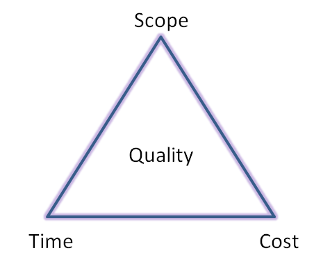

No matter the size of your company, technology has huge benefits that will make money and produce results for your customers.
Technology affects not only your profits and communications but also your company's efficiency and security.[1]
Information technology (IT) is a comprehensive term that includes all types of technology used to exchange, store and use or create information.
Commonly used IT equipment includes computers, servers, internet connectivity equipment and phones.[2]
IT refers to techniques used in business to manage all kinds of data and operate the hardware and software used in the process.[3]
[1]https://www.oksbdc.org/why-is-technology-important-in-business/
[2]https://smallbusiness.chron.com/business-benefits-information-technology-4021.html
[3]https://businesscasestudies.co.uk/business-theory/operations/the-use-of-it.html
Kanban boards are very useful whether you are working as part of a team or working on a project on your own.
Enabling you to list tasks and lets you and your team members keep up to date with what is happening with the project.
Trello is a useful app for this.
Visual Studio Code is a very useful app for trying to design a new website.
Being able to use HTML, CSS and Javascript on there to code your website and show you how it will work and look and showing up any errors immediately.
Slack is a great communication app if working as part of a team.
Keeping in contact with team members no matter where everyone is.
Weather it be a private message to just one team member or a general meeting or chat with everyone.
Communication is essential!
Github is a tremendous help.
A storage app for which you can save your work and give access to anyone you wish to access it.
It can be accessed from anywhere providing you have access to Github.
Google and Youtube are great research tools at your disposal. Showing you websites or videos of pretty much anything you will need to know
Planning on doing my own website seems overwhelming at first.
Where do I start? What do I do? HELP!!
Not to worry. Firstly I create my own Kanban board on Trello.
On there I start to list the tasks I know I will need to do.
On seeing these cards there I can then make a start.
This kanban board helps to organise my mind and i can see and start working on what I need to start with.
Google searches are of great inspiriation for research. A world wide library at your finger tips!
Google Drive is a cloud storage system that becomes of great use.
Being able to make notes of my research and storing it all in one place.
I can easily access what i have at a moments notice no matter where i am, as long as I have access to my Google account.
Researching and learning and practicing how websites are being writtain and coded.
Learning what language is used. HTML and CSS have to be researched and learnt and practised in order for me to effectively create an interesting webpage.
Github is a great storage device that runs well with Visual Studio Code.
Visual Studio Code will be used to create the new website and how it will look.
Using HTML, CSS and Javascript to design and code my website.
Github will be used to save and store all my work done on Virtual Studio Code so i can access my file anywhere as long as I have acess to Github.
It is reported that between 70 - 80% of all digital projects fail.
It is important to remember that technology is not the solution but only an enabler to success.
People are the real key to success!
You need to remember it is not the end when technology is introduced or upgraded.
It never stops!
People will need training and retraining on how to understand and get the most out of the technology in use.
Be constantly looking how to improve and be adaptable to change.
Firstly, listing what Aims and results you are looking for.
Research on Google will be helpful.
Networking and chatting to people with different skills and experiences in the fields appropriate will help too.
Once you have an idea of what programmes and tools are out there to help you achieve what you are wanting to achieve, it’s a matter of practice, practice and more practice!
Mistakes will be made, but things will become easier to use and understand the more you practice!
Chatting with my tutor and fellow classmates,
reading up I noticed that html and css is what is used to create a website and using functions in Javascript is what gives the website the functions and creates the magic!
Whilst creating a native app for iOS I researched and spoke to classmates and found out about X Code to design and run a dummy app as a project.
The tools on that programme helped greatly to design and run a simulator on how the app would work.
I first set up a kanban board on “Trello” which helped to start loading cards with tasks i knew i would have to do.
This helped formulate a plan of attack and where I should start.
https://developer.mozilla.org/en-US/
https://www.w3schools.com/
https://codepen.io/
Are great websites for help and tips!
Youtube was also a great source for videos of tips and help. A great visual aid I could follow.
Visual Studio Code is a fantastic programme, easy to use and easy to write your code onto.
Highlighting errors as they happen so you can really keep track as to where you are upto.
Keep saving as I go I could see how my website was turning out with each code added.
Github was a big help.
It meant I could store and save everything in one place and work from anywhere providing i had access to my GitHub account.
The Internet is a wonderful source of information and entertainment,
but it’s important to realise that there are a number of restrictions on what you can and cannot do online.
There are significant legal constraints on uploading and downloading of software and digital content.
Many items have a copyright and have digital rights.[1]
General Data Protection Regulation (GDPR) has seven key principles
The image below shows the classic triple constraint triangle.
This model shows that if any constraint is strained then this would affect the other constraints thus resulting in affecting the quality!
Compliance with these key principles is fundamental for good data protection practice and is key to compliance.[3]
Severe penalties are in place for companies that do not comply with these regulations.
[1]http://internet-safety-2012.info/legal-constraints-guidelines-and-procedures/
[2]https://www.workfront.com/blog/the-6-project-constraints
[3]https://ico.org.uk/for-organisations/guide-to-data-protection/guide-to-the-general-data-protection-regulation-gdpr/principles/
The image below shows the classic triple constraint triangle.
This model shows that if any constraint is strained then this would affect the other constraints thus resulting in affecting the quality!